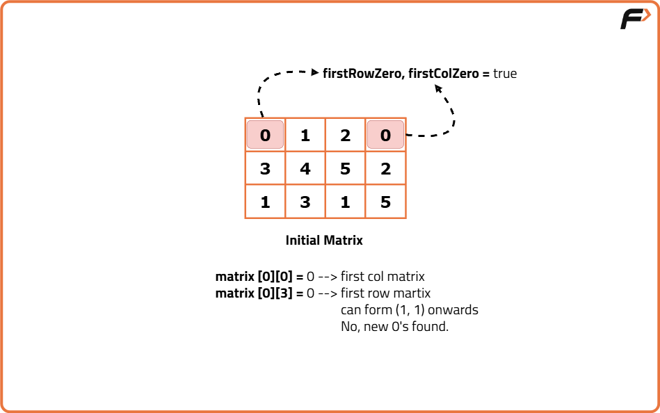
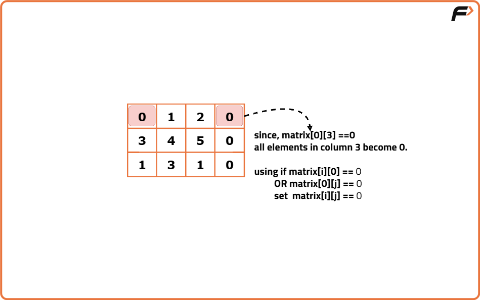
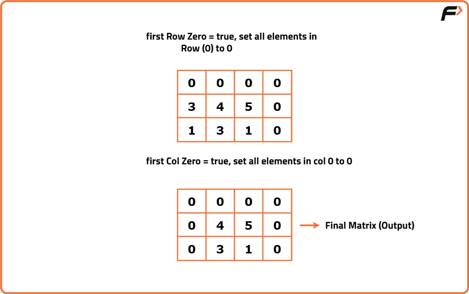

Set Matrix Zero
Problem Statement: Given a matrix if an element in the matrix is 0 then you will have to set its entire column and row to 0 and then return the matrix..
Examples
Input: matrix=[[1,1,1],[1,0,1],[1,1,1]] Output: [[1,0,1],[0,0,0],[1,0,1]] Explanation: Since matrix[2][2]=0.Therfore the 2nd column and 2nd row wil be set to 0.
Input: matrix=[[0,1,2,0],[3,4,5,2],[1,3,1,5]] Output:[[0,0,0,0],[0,4,5,0],[0,3,1,0]] Explanation:Since matrix[0][0]=0 and matrix[0][3]=0. Therefore 1st row, 1st column and 4th column will be set to 0
Disclaimer: Here is the practice link to help you assess your knowledge better. It's highly recommend trying to solve it before looking at the solution.
Brute force Approach
Algorithm
- Traverse the entire matrix.
- If an element is zero:
- Mark all elements in its row (except already zero) as -1.
- Mark all elements in its column (except already zero) as -1.
- Once the full traversal is complete, replace all -1 with 0.
Code
#include <bits/stdc++.h>
using namespace std;
class Solution {
public:
// Function to set entire row and column to 0 if an element in the matrix is 0
void setZeroes(vector<vector<int>>& matrix) {
// Get number of rows
int m = matrix.size();
// Get number of columns
int n = matrix[0].size();
// Traverse each cell of the matrix
for (int i = 0; i < m; i++) {
for (int j = 0; j < n; j++) {
// If current cell is zero
if (matrix[i][j] == 0) {
// Mark all elements in this row as -1 (except existing zeros)
for (int col = 0; col < n; col++) {
if (matrix[i][col] != 0)
matrix[i][col] = -1;
}
// Mark all elements in this column as -1 (except existing zeros)
for (int row = 0; row < m; row++) {
if (matrix[row][j] != 0)
matrix[row][j] = -1;
}
}
}
}
// Second pass: replace all -1 markers with 0
for (int i = 0; i < m; i++) {
for (int j = 0; j < n; j++) {
if (matrix[i][j] == -1)
matrix[i][j] = 0;
}
}
}
};
int main() {
// Example matrix
vector<vector<int>> matrix = {{1,1,1},{1,0,1},{1,1,1}};
// Create Solution object
Solution sol;
// Call function to modify matrix
sol.setZeroes(matrix);
// Print final matrix
for (auto row : matrix) {
for (auto val : row) {
cout << val << " ";
}
cout << endl;
}
return 0;
}
Complexity Analysis
Time Complexity: O(m * n * (m + n)), We iterate through every cell (m * n), and for each zero, we potentially mark its entire row (O(n)) and column (O(m)), leading to O(m * n * (m + n)) overall.
Space Complexity: O(1), We are not using any extra data structures, only modifying the matrix in place (apart from a few variables).
Better Approach
Algorithm
- One to track which rows need to be zeroed.
- One to track which columns need to be zeroed.
- Create a row array of size m (rows) and a col array of size n (columns) initialized to false.
- First pass: Traverse the matrix, and when you find a zero:
- Mark the corresponding row index in row array.
- Mark the corresponding col index in col array.
- Second pass: Traverse the matrix again, and if either the row or col is marked, set the cell to zero.



Code
#include <bits/stdc++.h>
using namespace std;
class Solution {
public:
// Function to set entire row and column to 0 if an element in the matrix is 0
void setZeroes(vector<vector<int>>& matrix) {
// Get number of rows
int m = matrix.size();
// Get number of columns
int n = matrix[0].size();
// Create row marker array
vector<int> row(m, 0);
// Create column marker array
vector<int> col(n, 0);
// First pass: mark rows and columns that need to be zeroed
for (int i = 0; i < m; i++) {
for (int j = 0; j < n; j++) {
// If element is zero, mark its row and column
if (matrix[i][j] == 0) {
row[i] = 1;
col[j] = 1;
}
}
}
// Second pass: set cells to zero based on markers
for (int i = 0; i < m; i++) {
for (int j = 0; j < n; j++) {
// If the row or column is marked, set cell to zero
if (row[i] == 1 || col[j] == 1) {
matrix[i][j] = 0;
}
}
}
}
};
int main() {
// Create the matrix
vector<vector<int>> matrix = {{1,1,1},{1,0,1},{1,1,1}};
// Create Solution object
Solution obj;
// Call function
obj.setZeroes(matrix);
// Print the updated matrix
for (auto row : matrix) {
for (auto val : row) {
cout << val << " ";
}
cout << endl;
}
return 0;
}
Complexity Analysis
Time Complexity: O(m × n),We make two passes over the matrix.First pass to identify rows and columns to be zeroed (O(m × n)).Second pass to update the matrix using the markers (O(m × n)).Total time is proportional to the number of cells in the matrix, so O(m × n).
Space Complexity: O(m + n),We store two extra arrays one for m rows and one for n columns.
No other extra space is used besides these arrays.
Optimal Approach
Algorithm
- firstRowZero:Was the first row supposed to be all zero?
- firstColZero:Was the first column supposed to be all zero?
- First pass: Mark zeros in the first row and column for any zero found in the rest of the matrix.
- Second pass: Use those markers to set rows and columns to zero.
- Check if the first row has any zero and store in a boolean flag.
- Check if the first column has any zero and store in a boolean flag.
- Traverse the rest of the matrix:
- If a cell is zero, mark its row in the first column and its column in the first row as zero.
- Traverse again (excluding first row and column), setting cells to zero if their row marker or column marker is zero.
- Finally, update the first row and first column based on the stored flags.
Code
#include <bits/stdc++.h>
using namespace std;
class Solution {
public:
// Function to set entire row and column to 0 if an element in the matrix is 0 (Optimal O(1) space)
void setZeroes(vector<vector<int>>& matrix) {
// Get dimensions of matrix
int m = matrix.size();
int n = matrix[0].size();
// Flag to track if first row should be zeroed
bool firstRowZero = false;
// Flag to track if first column should be zeroed
bool firstColZero = false;
// Check if first row has any zero
for (int j = 0; j < n; j++) {
if (matrix[0][j] == 0) {
firstRowZero = true;
break;
}
}
// Check if first column has any zero
for (int i = 0; i < m; i++) {
if (matrix[i][0] == 0) {
firstColZero = true;
break;
}
}
// Mark rows and columns in first row/column
for (int i = 1; i < m; i++) {
for (int j = 1; j < n; j++) {
if (matrix[i][j] == 0) {
matrix[i][0] = 0;
matrix[0][j] = 0;
}
}
}
// Set matrix cells to zero based on markers
for (int i = 1; i < m; i++) {
for (int j = 1; j < n; j++) {
if (matrix[i][0] == 0 || matrix[0][j] == 0) {
matrix[i][j] = 0;
}
}
}
// Handle first row
if (firstRowZero) {
for (int j = 0; j < n; j++) {
matrix[0][j] = 0;
}
}
// Handle first column
if (firstColZero) {
for (int i = 0; i < m; i++) {
matrix[i][0] = 0;
}
}
}
};
int main() {
Solution obj;
vector<vector<int>> matrix = {{0,1,2,0},{3,4,5,2},{1,3,1,5}};
obj.setZeroes(matrix);
for (auto row : matrix) {
for (auto val : row) {
cout << val << " ";
}
cout << endl;
}
return 0;
}
Complexity Analysis
Time Complexity: O(m × n),We iterate over the entire matrix a constant number of times (first pass for markers, second pass for zeroing, final pass for first row/col), where m = number of rows and n = number of columns.
Space Complexity: O(1),No extra space is used apart from a few boolean flags; all marker information is stored within the first row and column of the matrix itself.